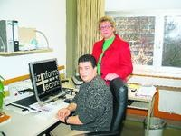

Von der ersten Hürde bis zum Berufsstart
Blindenzentrum an der FH betreut auch Studierende von Uni und Verwaltungsfachhochschule - Vor zehn Jahren gegründet.
(GIESSEN (fod). Die Idee zur Gründung des Zentrums für blinde und sehbehinderte Studierende (BliZ) an der Fachhochschule (FH) Gießen-Friedberg war Prof. Erdmuthe Meyer zu Bexten eher per Zufall gekommen. "Ich hatte an einem Kongress in Stuttgart teilgenommen, bei dem ich Kollegen traf, mit denen ich früher im Bereich Reha-Technik zusammengearbeitet hatte", erinnert sich die geschäftsführende Direktorin. "Bei der Rückfahrt stand ich dann in einem Stau und fasste den Entschluss, dass ich mich um blinde und sehbehinderte Studierende kümmern wollte." Auch beim damaligen FH-Präsidium sei man von diesem Vorschlag "sehr angetan" gewesen. Und so kann das im Dezember 1998 gegründete BliZ in diesem Jahr sein bereits zehnjähriges Bestehen feiern. Im dritten Stock des Gebäudes C der Fachhochschule verfügt man mittlerweile über zehn Räume, in denen 16 Mitarbeiter, davon über die Hälfte selbst blind oder sehbehindert, beschäftigt sind. Die hessische Landesregierung finanziert den gesamten Betrieb, "als Sondertatbestand", wie Meyer zu Bexten hinzufügt, mit jährlich 150000 Euro. Weitere Mittel kommen von der Bundesagentur für Arbeit, dem Landeswohlfahrtsverband und anderen Organisationen oder werden durch Drittmittel - "Hier liegen wir im vorderen Viertel der FH" - eingeworben. In den blinden- und sehbehindertengerecht eingerichteten Räumlichkeiten findet sich alles, was die Nutzer zur Arbeit und zum Lernen brauchen: Moderne Bildschirmlesegeräte, die eine starke Vergrößerung der Texte am Monitor erlauben, Braille-Zeilen zum Lesen und Braille-Drucker zur Ausdruck von Texten in Blindenschrift, Computer-Tastaturen mit größeren Schriftzeichen auf den Tasten oder Schnittstellen zum Anschluss mitgebrachter Notebooks. "Wir sind gut ausgestattet", stellt die 46-jährige Professorin, die selbst Medizinische Informatik und Elektrotechnik studiert hatte, fest. Dennoch sei man auch weiterhin auf Spenden angewiesen, um zusätzliche Anschaffungen zur Verbesserung der Studienbedingungen tätigen zu können.
 Engagiert: Prof. Erdmuthe Meyer zu Bexten und ihr Mitarbeiter Zeki Öztürk setzen sich für die Belange blinder und sehbehinderter Studierender ein. Bild: Docter
Zurzeit werden vom Blindenzentrum über 30 Studierende der Fachhochschule,
aber auch fünf von der Universität sowie je einer von den Verwaltungshochschulen in Kassel
und Wiesbaden betreut. Die starke Nachfrage der FH unter den Betroffenen führt
Erdmuthe Meyer zu Bexten auf die Infrastruktur zurück: "Hier besteht der Vorteil,
dass alles auf einem Campus zu finden ist und die Wege kurz sind." Auch wenn die FH zur Heimat
des Zentrums geworden ist, macht man bei der Aufnahme keinen Unterschied, von welcher Hochschule
die Hilfesuchenden nun stammen. "Häufig sind bei den Vorstellungsgesprächen auch
die Eltern anwesend", berichtet die Direktorin. "Sie wollen sichergehen, dass ihr Nachwuchs
gut betreut ist, sind allerdings oft überbesorgt." Doch Sorgen sind unbegründet, bietet doch
das BliZ eine Rundum-Betreuung an. "Vom Bewältigen der Hürden vor und während des ersten Semesters
bis zur Eingliederung ins Berufsleben", wie Erdmuthe Meyer zu Bexten die Hauptaufgabe zusammenfasst.
Ihr wissenschaftlicher Mitarbeiter Diplom-Betriebswirt Zeki Öztürk beispielsweise kümmert sich
ausschließlich um die Belange blinder und sehbehinderter Studierender am Fachbereich Wirtschaft,
an dem derzeit die größte Zahl der Betreuten eingeschrieben ist. "Die Probleme sind in allen
Bereichen zu finden, beim Kennenlernen der Wege, dem Zusammenstellen der Stundenpläne und Praktika,
dem Anfertigen der Diplomarbeit, bei der Wohnungssuche oder bei Behördenangelegenheiten",
sagt der 39-Jährige. Hinzu kommt die Vorbereitung von Klausuren, deren Texte und Abbildungen für
Blinde und Sehbehinderte mit großem Aufwand an die jeweiligen Bedürfnisse angepasst werden müssen.
Selbstverständlich bedürfe dies der Zusammenarbeit mit den einzelnen Fachbereichsdekanaten und
Professoren, da man im Zentrum die Klausurinhalte bereits mehrere Wochen vorher benötige, ergänzt er.
"Im Laufe der Jahre hat sich ein gutes Verhältnis entwickelt." Nach Beendigung seines Studiums
der Betriebswirtschaftslehre hatte Zeki Öztürk vor vier Jahren eine Stelle am Blindenzentrum erhalten.
Aus eigener Erfahrung weiß er, welche Schwierigkeiten gerade zu Studienbeginn auf einem zukommen,
verfügt der 39-Jährige selbst doch aufgrund eines Grünen Stars nur noch über eine Sehfähigkeit von
fünf Prozent. Ausgezeichneter VorschlagBei der Hilfe für benachteiligte Studierende bleibt es jedoch nicht.
Das BliZ sei ebenfalls eine anerkannte Ausbildungsstätte, so Erdmuthe Meyer zu Bexten.
"Insgesamt gibt es bei uns sechs Ausbildungsplätze zum Fachinformatiker." Einige der aktuell 16 Mitarbeiter,
darunter zahlreiche ehemalige FH-Absolventen, sind fest in Drittmittel-Projekte eingebunden.
Dazu gehöre laut der Hochschullehrerin zum Beispiel der Test neu konstruierter Hilfsgeräte auf ihre
Praxistauglichkeit. Sogar an der blinden- und sehbehindertengerechten Gestaltung des Berliner Platzes
in Gießen sei man beteiligt gewesen und habe Vorschläge für den Bodenbelag gemacht. Belohnung für all den Einsatz
war der erste Preis im vom Bundesministerium für Gesundheit und Bundesministerium für Arbeit und
Soziales ausgerichteten Wettbewerb "Wissenschaft ohne Barrieren", der Meyer von Bexten im November 2007 in Berlin
für das BliZ verliehen wurde. Trotz aller bisherigen Erfolge, ein Nachlassen in den Bemühungen gibt es für sie nicht.
"Man muss immer dranbleiben." Denn noch sei viel zu tun, um blinden und sehbehinderten Studierenden
ideale Bedingungen an den Hochschulen bieten zu können.
Gießener Anzeiger 23.08.2008